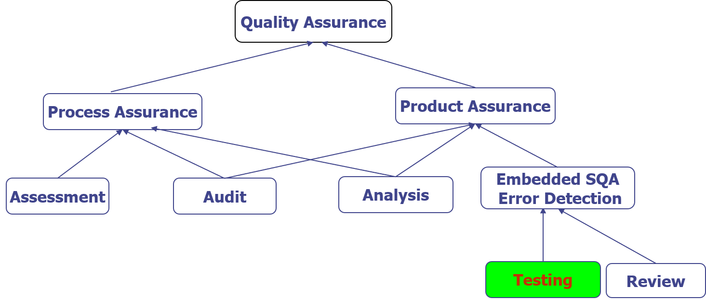
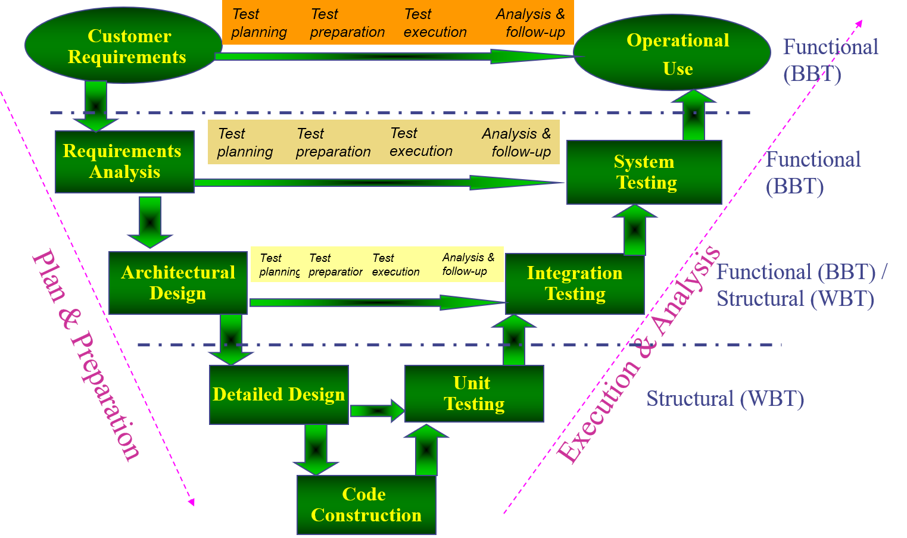
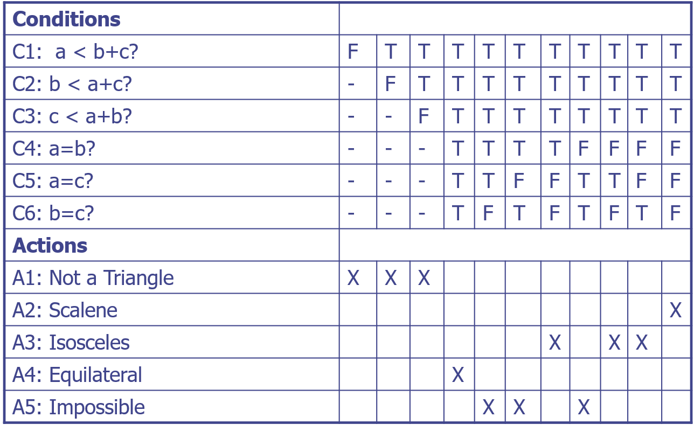
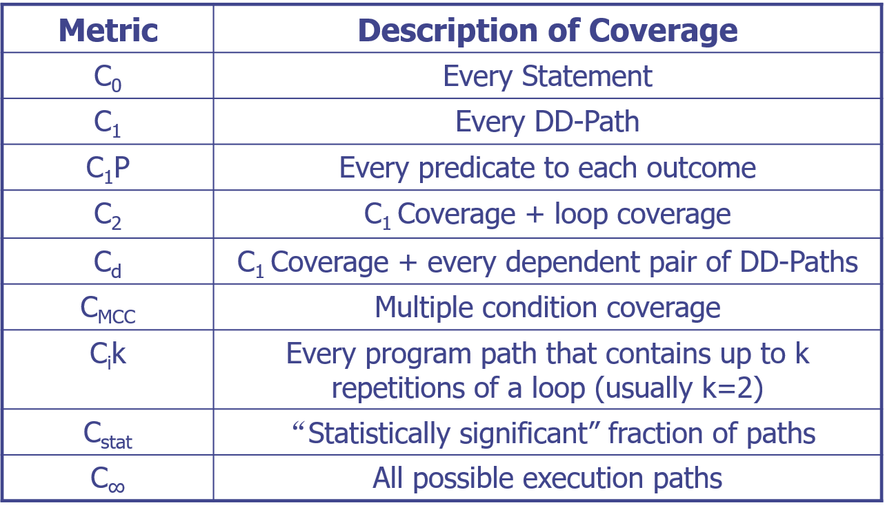
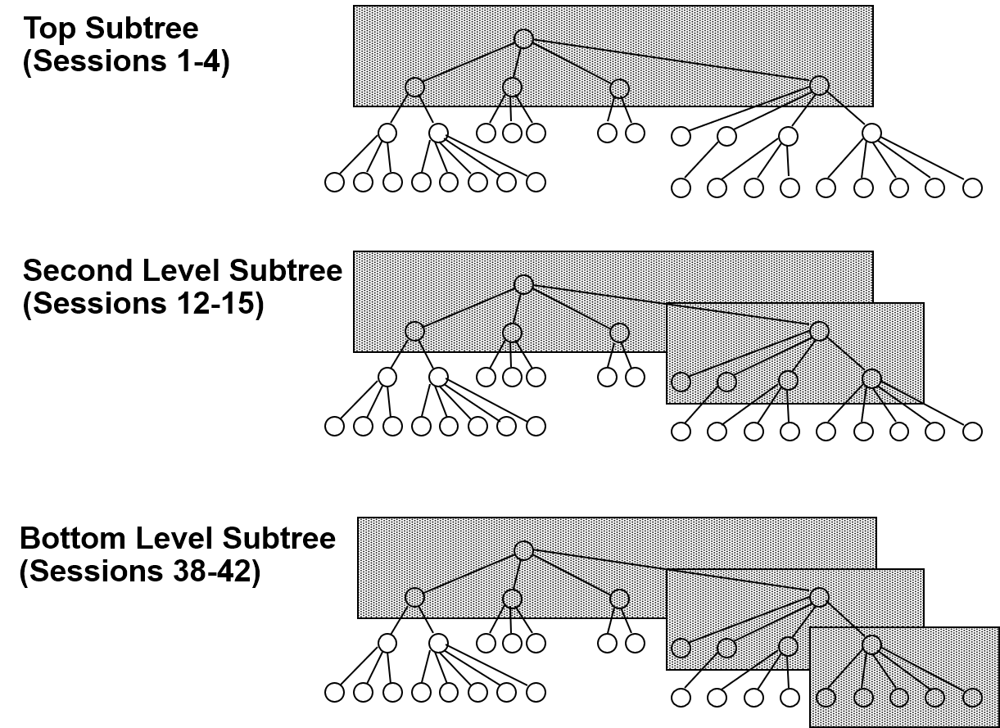
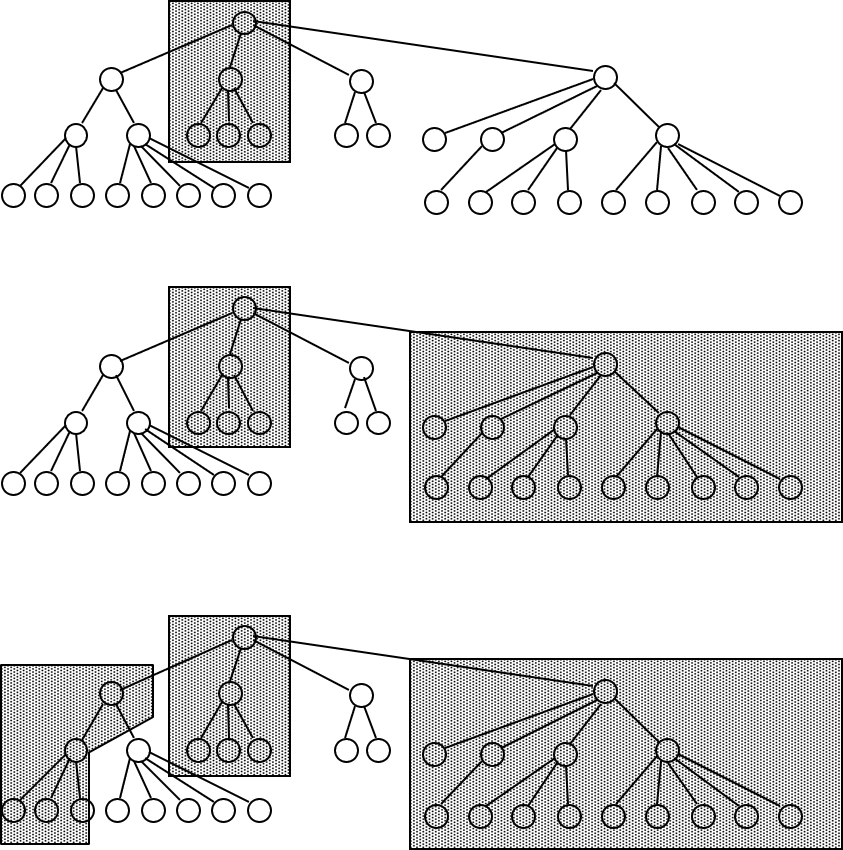
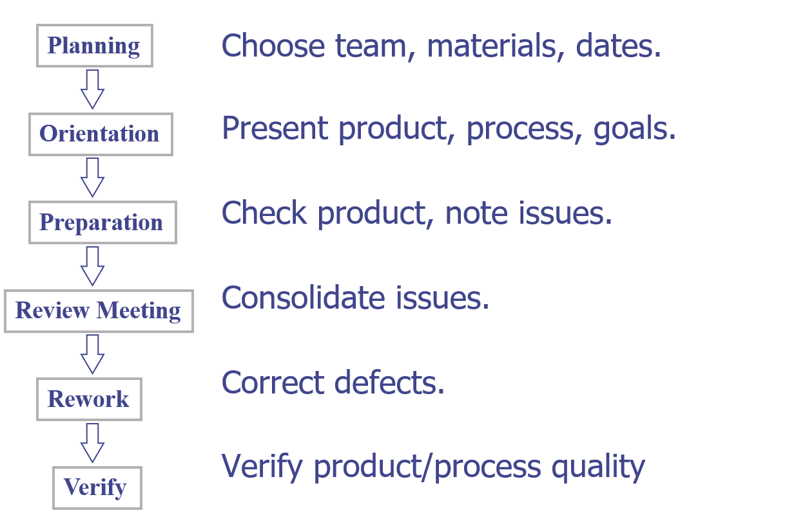
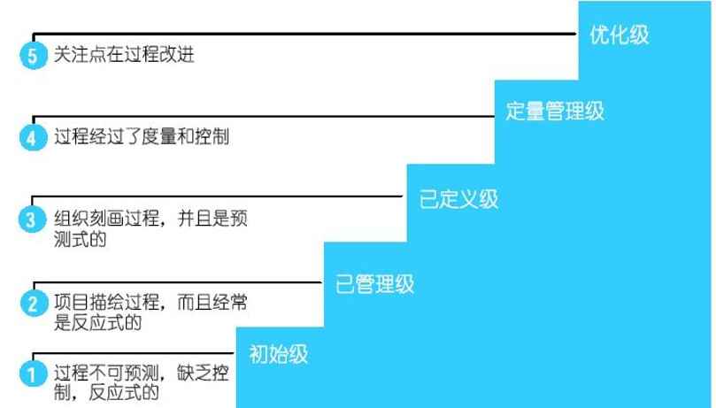

#测试概述
#基本定义
错误（Error）：产生错误结果的人为行为。A human action that produces an incorrect result.
缺陷（fault）：计算机程序中不正确的步骤、过程或数据定义。缺陷是错误（Error）的结果/表现。
失效（failure）：系统或组件不能在规定的性能要求内执行其所需的功能。缺陷执行时会发生失效。
The term failure refers to a behavioral deviation from the user requirement or the product specification; fault refers to an underlying condition within a software that causes certain failure(s) to occur; while error refers to a missing or incorrect human action resulting in certain fault(s) being injected into a software.The term “defect” generally refers to some problem with the software, either with its external behavior or with its internal characteristics.
错误（Error）、缺陷（fault）和失效（failure）统称为 defect（或者说是 bug）。
#质量控制与质量保证
质量控制（Quality Control）：旨在评估开发或制造产品质量的一系列活动。“扣留”任何不符合条件的产品。
质量保证（Quality Assurance）：通过在整个开发和制造过程/阶段中执行的各种活动，最大限度地降低保证质量的成本。
- Preventing the causes of errors
- Detecting faults
- Correcting failures
QA 和 QC 服务于不同的对象，QC 的活动是 QA 的活动的一部分。
#QA 的构成与活动

#质量成本构成
-
Costs of Control
- Prevention costs
- Appraisal costs（评估成本）
-
Costs of Failure
- Internal failure costs
- external failure costs
#软件测试的目的与原则
软件测试在软件质量保证活动中起着核心作用。通过运行软件系统或执行其指定的功能，测试人员可以确定观察到的系统行为是否符合其规范或要求。如果两者之间存在差异，可以采取后续行动来定位和消除软件代码中的相关问题，这也可能包括修改软件设计。
因此，通过测试来检测和消除缺陷有助于减少交付软件产品中的缺陷数量，从而帮助实现质量目标。即使没有观察到任何差异，也可以将特定实例累积为证据，以证明软件按指定方式运行。因此，测试是确保和证明软件质量最常用的手段。
- 所有测试都应该可以追溯到客户要求。
- 测试应该在测试开始之前很久就要计划好。
- Pareto 原则（80％ 的错误可能在 20％ 的代码中找到）适用于软件测试。
- 测试应该从小开始，然后进展到大。
- 彻底的测试是不可能的。
- 为了最有效，测试应由独立的第三方进行。
#测试用例
软件测试的本质是为要测试的项目确定一组测试用例。
测试用例是描述输入、操作或事件以及预期响应的文档，用于确定应用程序的功能是否正常工作。
测试用例应包含诸如测试用例标识符、测试用例名称、目标、测试条件/设置、输入数据要求、步骤和预期结果等详细信息。
#V 模型

#功能性测试
#边界值测试
#边界值分析
关注输入域，不适合强类型语言。
基于“单缺陷”假设，即：失效（failure）极少是由两个（或多个）缺陷的同时发生引起的。
具体方法：对于多个输入，假设一个变量是导致 failure 的，其他变量取固定值（5 种情况：最大值 max、最小值 min、中间值 mid、比最大值小一点 max-、比最小值大一点 min+）。
假设一个程序有 n 个输入，则测试用例数：$5 \times n - (n-1) = 4n + 1$，其中 $n-1$ 为重复用例数。
#健壮性测试
健壮性测试是边界值分析的一种简单拓展，除了变量的五个边界值分析取值，还要增加略超过最大值（max+）和略小于最小值（min-）的取值，即每个变量取7个值。
健壮性测试的主要价值在于强制注意异常处理。
#最坏情况测试
多缺陷假设，即假设失效（failure）是由多个变量引起的。取可能值的笛卡尔乘积，n 变量最坏情况测试下的测试用例数为 $5^{n}$，在健壮最坏情况测试下的测试用例数为 $7^{n}$。
#边界值分析的局限性
如果被测程序是多个独立变量的函数，这些变量受物理量的限制，则很适合边界值分析。
物理变量比如温度、压力、空气速度、迎角、负载等，物理边界很重要；与之相对的是逻辑变量，比如说 PIN 和电话号码等。
#等价类测试
使用等价类作为功能性测试的基础有两个动机：进行完备的测试，同时希望避免冗余。
等价类构成一个集合的分区，该集合是相互不相交的子集的集合，这些子集的并集是整个集合。
单缺陷假设和多缺陷假设产生弱等价类测试和强等价类测试之分，针对是否进行无效数据的处理产生健壮与一般等价类测试之分。
- 弱一般等价类测试：单缺陷假设，不考虑异常区域
- 强一般等价类测试：多缺陷假设，不考虑异常区域
- 弱健壮等价类测试：单缺陷假设，要考虑异常区域
- 强健壮等价类测试：多缺陷假设，要考虑异常区域
#强等价类与弱等价类
弱等价类：每个等价类都覆盖一次即可，测试用例数与输入变量的最多的划分一致，如第一个输入划分了 3 个等价类，第二个输入划分了 4 个等价类，则测试用例数为 4 个。
强等价类：每一个输入的等价类都要进行组合，如第一个输入划分了 3 个等价类，第二个输入划分了 4 个等价类，则测试用例数为 $3 \times 4 = 12$ 个。
#基于决策表的测试
在所有功能性测试的方法中，基于决策表的测试方法是最严格的，因为决策表具有逻辑严格性。
决策表分为条件桩，条件条目，行动桩，行动条目四部分。

#结构性测试
也叫做白盒测试、透明盒测试。基于被测程序的源代码，而不是基于定义。
#路径测试
#程序图
给定采用命令式程序设计语言编写的一段程序，其程序图是一种有向图，图中的节点表示语句片段，边表示控制流。对于给定的程序，可以使用多种不同的程序图，所有这些程序图都可以简化为唯一的 DD-路径图。
#DD-路径
DD-路径（decision-to-decision）是从程序图中获得的链，其中链是初始节点和终端节点不同的路径，并且每个节点的内度为1，外度为1。初始节点与链中的其他节点2-连接（单向可达），不会存在 1-连接或 3-连接。
相关定义：
- 内度（入度）：将该节点作为终止节点的不同边的条数。
- 外度（出度）：将该节点作为开始节点的不同边的条数。
- 路径：有向路径是一系列边，使得对于该序列中的所有相邻边对偶 $e_i, e_j$ 来说，第一条边的终止节点是第二条边的开始节点。
- 半路径：有向半路径是一系列边，使得对于该序列中至少有一个相邻边对偶 $e_i, e_j$ 来说，第一条边的开始节点是第二条边的开始节点，或第一条边的终止节点是第二条边的终止节点。
- 0-连接：对于有向图中的两个节点 $n_i,n_j$，当且仅当 $n_i$ 和 $n_j$ 之间没有路径。
- 1-连接：对于有向图中的两个节点 $n_i,n_j$，当且仅当 $n_i$ 和 $n_j$ 之间有一条半路径，但是没有路径。
- 2-连接：对于有向图中的两个节点 $n_i,n_j$，当且仅当 $n_i$ 和 $n_j$ 之间有一条路径。
- 3-连接：对于有向图中的两个节点 $n_i,n_j$，当且仅当从 $n_i$ 到 $n_j$ 有一条路径，并且从 $n_j$ 到 $n_i$ 有一条路径。
#DD-路径图
给定采用命令式程序设计语言编写的一段程序，其 DD-路径图是有向图，图中的节点表示程序图的 DD-路径，边表示连接 DD-路径之间的控制流。
#测试覆盖指标
- 语句覆盖：选择足够多的测试数据，使被测程序中每个语句至少执行一次
- 判定覆盖：不仅每个语句必须至少执行一次，而且每个判定的每种可能的结果都应该至少执行一次，也就是每个判定的每个分支都至少执行一次
- 条件覆盖：不仅每个语句至少执行一次，而且使判定表达式中的每个条件都取到各种可能的结果
- 判定/条件覆盖：选取足够多的测试数据，使得判定表达式中的每个条件都取到各种可能的值，而且每个判定表达式也都取到各种可能的结果
- 条件组合覆盖：条件组合覆盖是更强的逻辑覆盖标准，它要求选取足够多的测试数据，使得每个判定表达式中条件的各种可能组合都至少出现一次，但不一定每条路径都执行到
- 路径覆盖：使程序的每条可能路径都至少执行一次（如果程序图中有环，则要求每个环至少经过一次）。路径覆盖是覆盖率最高的一种覆盖技术。
条件覆盖通常比判定覆盖强，因为它使判定达式中每个条件都取到了两个不同的结果，判定覆盖却只关心整个判定表达式的值。但是，也可能有相反的情况。

#基路径测试
#集成测试
#基于分解的集成
给定分解树所需集成测试会话数： 会话 = 节点 - 叶子节点 + 边。
#大棒集成（Big Bang）
所有组件一次组装和测试。缺点是当发现失效时，没有多少线索能够用来帮助确定缺陷的位置。
#自顶向下集成
自顶向下集成从主程序（树根）开始。所有被主程序调用的下层单元都作为“桩”出现，桩就是模拟被调用单元的一次性代码。
提供了主程序的所有桩后，可开始测试主程序，就像它是一个独立单元一样。（这是第一个会话，主程序+桩）。在确信主程序逻辑正确之后，将逐渐采用实际代码取代这些桩。

在最上层，要开发第一层分解中四个组件的桩，共有四个集成过程，在每个过程中，每次用一个已完成的子程序去替代一个桩，直到完整测试整个系统。自顶向下集成采用功能分解树的广度优先遍历策略。
优点：测试用例可以根据系统的功能（功能需求）来定义。结构技术也可用于顶层的单元。 缺点：编写桩可能很困难，尤其是在参数传递很复杂的情况下，桩必须允许测试所有可能的条件。桩模块数 = 节点数 - 1。
#自底向上集成
自底向上的集成策略首先侧重于测试最低级别的单元（即分解树叶的单元）。从分解树的叶开始，并用特别编写的驱动器测试。大多数系统在接近叶时都有相当高的扇出数，因此在自底向上集成顺序中，不需要同样数量的驱动器，不过代价是驱动器模块都比较复杂。
驱动器数 = 节点数 - 叶子节点数。
#三明治集成
三明治集成是自顶向下和自底向上集成的组合。如果通过分解树考虑三明治集成，则只需要在子树上真正进行大爆炸集成。桩和驱动器的开发工作都比较小，不过代价是作为大爆炸集成的后果，在一定程度上增加了定位缺陷的难度。

#基于调用图的集成
基本思想是用调用图代替分解树。
调用图是一个定向标记的图，其中节点表示功能单元，边表示调用事件或特定的资源请求。
#成对集成
对调用图的每条边有一个集成测试会话。
#相邻集成
图中节点的邻居是边从给定节点引出的节点集合。在有向图中，节点邻居包括所有直接前驱结点和所有直接后继节点。
内部节点 = 节点 - （源节点 + 汇节点）
邻居 = 内部节点 + 源节点
综合上面的公式得到：邻居 = 节点 - 汇节点
- 汇节点：出度为0的节点
- 源节点：入度为0的节点
#基于路径的集成
#MM-路径
MM-路径是穿插出现模块执行路径和消息的序列。MM-路径永远不是可行执行路径，并且这些路径要跨越单元边界。节点表示模块执行路径，边表示消息。对于传统（过程）软件，MM-路径永远从主程序中开始，在主程序中结束。
相关定义：
- 程序源节点：程序执行开始或重新开始处的语句片段。
- 程序汇节点：程序执行结束处的语句片段。
- 模块执行路径：以源节点开始、以汇节点结束的一系列语句，中间没有插入汇节点。
- 消息：一种程序设计语言机制，通过这种机制一个单元将控制转移给另一个单元。
#系统测试
#线程（Thread）级别
- 单元级线程被理解为指令的执行时间路径或流程图上的某个路径。
- 集成级线程是实现某些原子函数的mm路径序列。表示为模块执行和消息的序列。
- 系统级线程是原子系统函数（ASF）的序列。
原子系统功能是一种在系统层可以观察得到的端口输入与输出事件的行动。
线程提供了三个测试级别的统一视图：
- 单元测试测试单个功能
- 集成测试检查单元之间的交互
- 系统测试检查ASF之间的交互。
#质量保证
#评审（Review）
对产品或项目状态进行评估，以确定与计划结果的差异并提出改进建议。
#管理评审（Management Review）
“管理评审的目的是监测进度，确定计划和进度的状态，确认需求及其系统分配，或评估用于实现适用性的管理方法的有效性”。
它们支持有关软件项目期间所需更改和纠正措施的决策。管理评审确定计划、进度和要求的充分性，并监控其进度或不一致性。这些评审可以对产品进行，例如审计报告、进度报告、V&V报告和许多类型的计划，包括风险管理、项目管理、软件配置管理、软件安全和风险评估等。
#技术评审（Technical Review）
“技术评审的目的是评估软件产品，以确定其是否适合预期用途。目的是识别与批准的规范和标准的差异。结果应向管理层提供证据，确认（或不确认）产品符合规范、符合标准，并控制变更”。
在技术评审中必须建立特定的角色：决策者、评审负责人、记录员和技术人员，以支持评审活动。技术审查要求强制投入：
- 目标陈述
- 特定的软件产品
- 具体项目管理计划
- 与此产品关联的问题列表
- 技术评审程序
小组遵循审查程序。技术合格的人员提供产品概述，并在一个或多个会议期间进行检查。技术评审应在评审中列出的所有活动完成后完成。
#审查（Inspection）
目的：检测和识别软件产品异常
与评审的两个重要区别：
- 对审查组成员担任管理职务的个人，不得参加审查。
- 审查由一名接受审查技术培训的公正的协助者领导。
审查总是涉及到中间产品或最终产品的作者，而其他的评审可能不会。
审查会议通常持续几个小时，而技术评审通常范围更广，时间更长。
审查退出标准：
- 不接受或最轻微的返工
- 接受返工验证
- 复验

#走查（Walkthrough）
目的：
- 评估软件产品
- 有时用于教育观众
主要目标：
- 发现异常
- 改进软件产品
- 考虑替代实施
- 评估是否符合标准和规范
走查与审查类似，但通常不太正式。
#层次关系
SQA 计划包括主要测试计划和评审计划，主要测试计划包括单元测试计划、集成测试计划、系统测试计划和验收测试计划，评审计划包括审查和走查。
#制定测试计划的步骤
- 确定测试需求
- 评估风险
- 制定测试策略
- 明确测试中的关键活动(WBS)
- 估计测试成本和工作量
- 定义角色和确定资源
- 确定进度, 创建时间表
- 生成测试计划
#质量度量指标
缺陷密度->缺陷个数：优先级（严重性） 缺陷趋势->缺陷个数：时间 缺陷龄期->缺陷存在周期
#CMMI
#CMMI的五个级别
